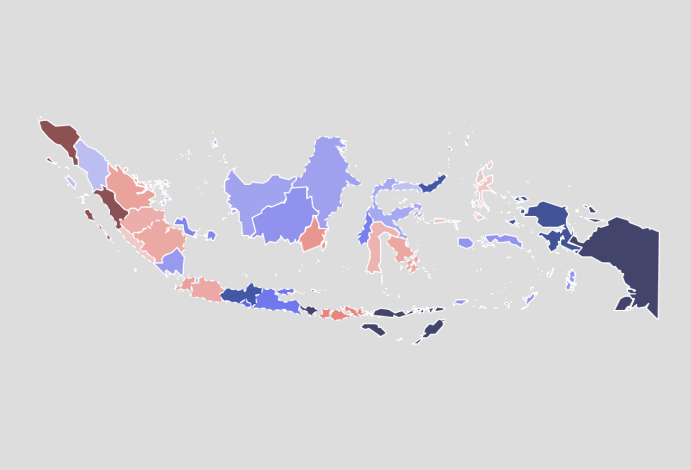

HOME
HOME
HOME
HOME

In May 2019, Indonesia held a presidential election. The two candidates fighting for the seat were Prabowo Subianto and Joko Widodo. Interestingly, both of them also fought in the 2014 Presidential Election. Both in 2014 and 2019, Jokowi emerged as the winner.
This map helps us see how the provinces in Indonesia are divided into Prabowo and Jokowi supporter, and how both candidates fared in 2019 election compared to the 2014 election.
Visit the website